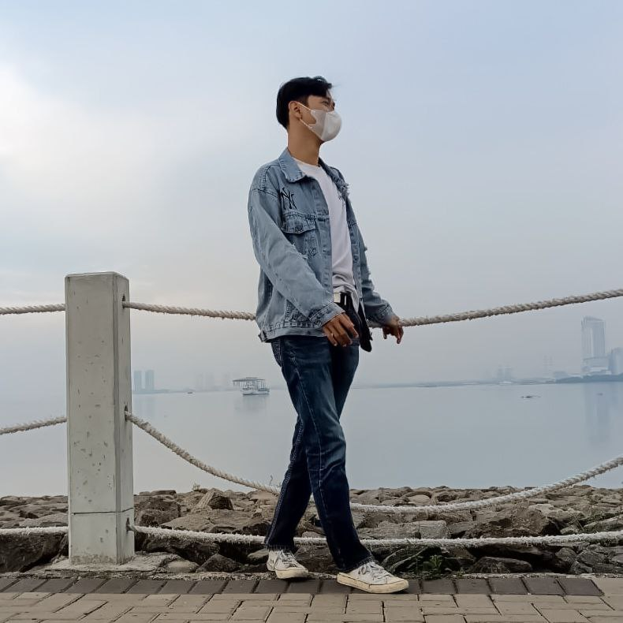

Rio is interested in Information Technology, likes graphic design and anything related to technology. Rio was born in Jakarta in 2000, I completed my college education at Pamulang University majoring in Information Engineering. Previously, I worked as a computer technician and on-call technician. In my spare time, I like outdoor activities, but currently I mostly do activities with the computer.